Stars
Звёзды — это массивные самосветящиеся шары из газа и плазмы, удерживаемые силами гравитации. В их недрах идут термоядерные реакции: водород превращается в гелий, высвобождая огромное количество энергии в виде света и тепла. Ближайшая к Земле звезда — Солнце. Другие звёзды мы видим ночью как мерцающие точки. Они различаются по размеру, температуре и яркости. Звёзды рождаются из межзвёздных облаков газа, живут миллиарды лет и в конце концов угасают, оставляя после себя белые карлики, нейтронные звёзды или чёрные дыры.
История нашей звезды
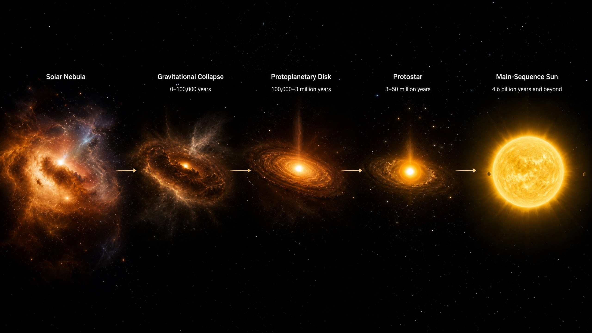
Солнце — центральная и единственная звезда Солнечной системы, источник света и тепла для Земли. Его история началась около 4,5–4,6 миллиарда лет назад. Разберём её по этапам. Всё началось с гигантского облака межзвёздного газа и пыли — в основном водорода и гелия, а также остатков вещества от взорвавшихся древних звёзд. По каким‑то причинам (возможно, из‑за ударной волны от близкой сверхновой) облако начало сжиматься под действием собственной гравитации.
Процесс шёл так:
Частицы газа и пыли притягивались друг к другу, увеличивая плотность в центре облака.
Облако начало вращаться и сплющиваться в диск — из его центральной части позже сформировалось Солнце, а из внешних областей — планеты.
В центре сгустка образовалась протозвезда — ещё не настоящая звезда, потому что термоядерные реакции в ней не шли.
По мере сжатия температура и давление в ядре протозвезды росли. Через примерно 50 миллионов лет условия стали достаточными для запуска термоядерного синтеза. Водород начал превращаться в гелий, высвобождая огромное количество энергии. Так протозвезда стала Солнцем.
Сейчас Солнце находится примерно в середине своего жизненного цикла и относится к звёздам главной последовательности (жёлтый карлик). Ключевые характеристики:
- Состав: около 74 % водорода и 24 % гелия (остальное — более тяжёлые элементы).
- Температура: на поверхности — около 5800 К, в ядре — около 15 млн К.
- Энергия: каждую секунду в ядре Солнца около 4 млн тонн вещества превращается в энергию, излучаемую в виде света и тепла.
- Стабильность: этот этап продлится ещё примерно 5 миллиардов лет. Постепенно светимость Солнца будет медленно расти.
Когда запасы водорода в ядре начнут иссякать, Солнце пройдёт через несколько драматических стадий:
- Красный гигант (через ~5–6 млрд лет). Солнце начнёт расширяться, поглотив Меркурий и Венеру. Его радиус может достичь орбиты Земли — планета либо будет поглощена, либо станет выжженной скалой.
- Гелиевая вспышка. Когда температура в ядре достигнет 100 млн К, начнётся термоядерный синтез гелия в углерод и кислород. Солнце ненадолго уменьшится в размерах.
- Повторное расширение. После исчерпания гелия внешние слои звезды снова начнут расширяться. Светимость многократно возрастёт.
- Планетарная туманность. Внешние слои Солнца будут сброшены в космос, образовав красочную газовую оболочку.
- Белый карлик. Ядро Солнца, оставшееся без внешних слоёв, остынет и превратится в плотный, но тусклый белый карлик. Он будет медленно остывать миллиарды лет, пока не станет чёрным карликом — холодным и невидимым.
Итог: Солнце родилось из космической пыли, миллионы лет «созревало», затем на миллиарды лет вступило в стабильную фазу. Сейчас оно дарит жизнь Земле, но в далёком будущем угаснет, оставив после себя лишь крошечный остаток. Эта история типична для звёзд среднего размера и напоминает нам о величии и цикличности процессов во Вселенной.
Виды звезд
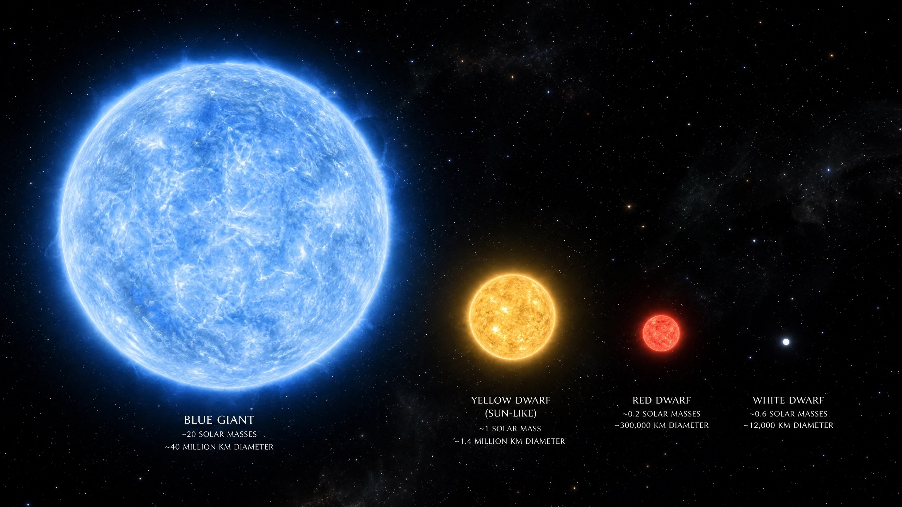
Звёзды — это гигантские самосветящиеся шары из газа и плазмы, в недрах которых происходят термоядерные реакции. Они различаются по массе, размеру, температуре, яркости и стадии эволюции. Разберём основные виды звёзд подробнее.
Звёзды главной последовательности
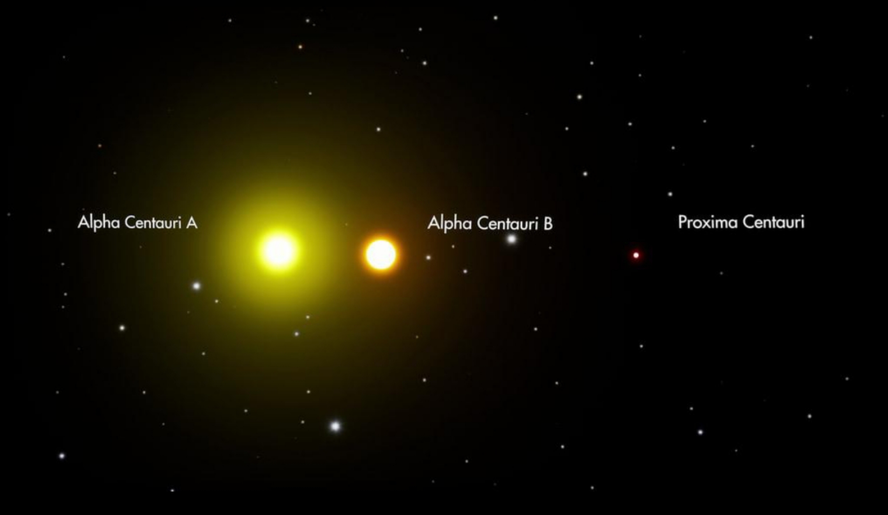
Звёзды главной последовательности — это звёзды, которые находятся на стадии эволюции, когда единственным источником энергии являются термоядерные реакции превращения водорода в гелий. Эта стадия является наиболее длительной в жизни звезды — на ней она проводит более 90% времени
Это самая многочисленная группа звёзд, включая наше Солнце. На этой стадии в ядрах звёзд водород превращается в гелий — это основной источник их энергии.
Протозвёзды
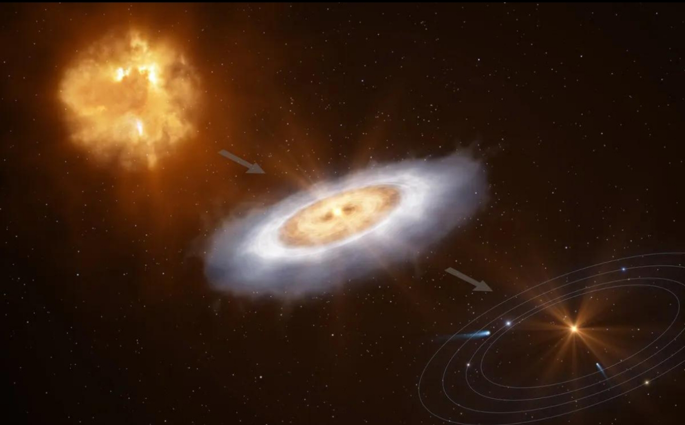
Протозвезда — это небесное тело на ранней стадии формирования звезды: уже не молекулярное облако, но ещё не полноценная звезда. Протозвезда становится звездой главной последовательности, когда в её недрах запускаются устойчивые термоядерные реакции.
Это ранняя стадия формирования звезды, когда газовое облако начинает сжиматься под действием гравитации, но термоядерные реакции ещё не начались.
Звёзды типа T Тельца
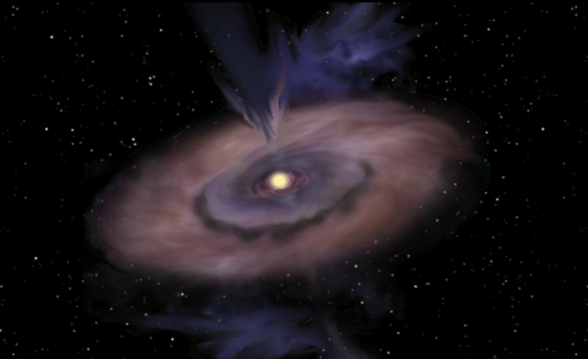
Звёзды типа T Тельца (англ. T Tauri stars, сокращённо TTS) — класс молодых переменных звёзд, ещё не вступивших на главную последовательность, названный по имени своего прототипа — звезды T Тельца.
Звёзды типа Т Тельца образуются на ранней стадии эволюции, когда протозвезда ещё не запустила устойчивый термоядерный синтез водорода в ядре. Они формируются из сжимающегося под действием гравитации облака газа и пыли; вещество из окружающего аккреционного диска продолжает падать на молодую звезду. На этой фазе энергия выделяется за счёт гравитационного сжатия, а не ядерных реакций. Такие звёзды отличаются высокой активностью — у них наблюдаются вспышки, мощные звёздные ветры и сильные магнитные поля. Стадия Т Тельца длится около 100 миллионов лет, после чего звезда переходит на главную последовательность.
Красные гиганты и сверхгиганты
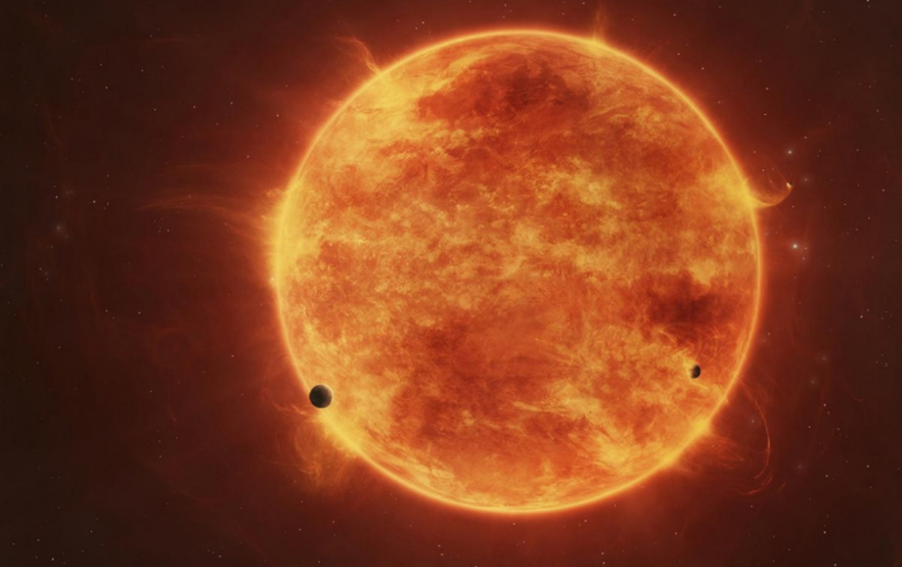
Красные гиганты и сверхгиганты — это типы звёзд, которые отличаются большими размерами, высокой светимостью и относительно низкой температурой поверхности. Они занимают определённые области на диаграмме Герцшпрунга — Рассела (H-R) и проходят специфические стадии эволюции. Красные гиганты и сверхгиганты образуются на поздних стадиях эволюции звёзд после того, как в их ядрах практически выгорает водород. Ядро сжимается и разогревается, а внешние слои расширяются и охлаждаются — из‑за этого звезда увеличивается в размерах и приобретает красный цвет. У более массивных звёзд этот процесс приводит к формированию сверхгигантов, у менее массивных — гигантов. Температура поверхности таких звёзд обычно составляет 3 000–5 000 K, а их радиус может превышать солнечный в десятки или даже сотни раз.
Белые карлики
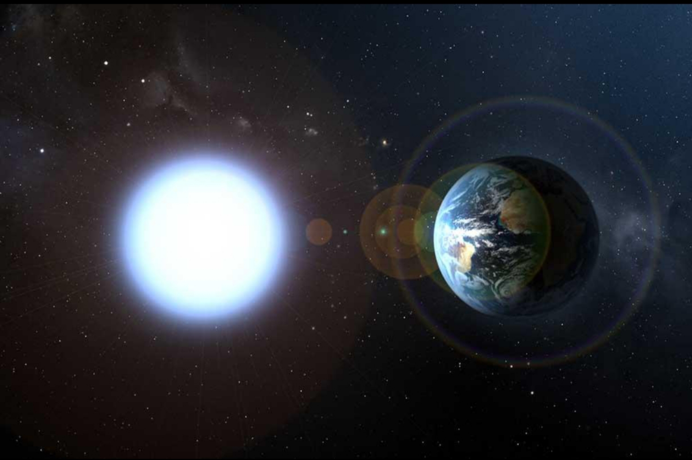
Белые карлики — компактные звёзды, лишённые собственных источников термоядерной энергии. Они светят за счёт запасённой тепловой энергии, постепенно остывая в течение миллиардов лет.
Белые карлики образуются из звёзд с массой до 8–10 M ⊙ . Когда в ядре звезды заканчивается водород, она расширяется и становится красным гигантом. В ядре начинаются реакции превращения гелия в углерод и кислород. Если массы недостаточно для запуска реакций с углеродом, звезда сбрасывает внешние слои, формируя планетарную туманность. Оставшееся плотное ядро и есть белый карлик. Он постепенно остывает, излучая запасённую тепловую энергию.
Нейтронные звёзды
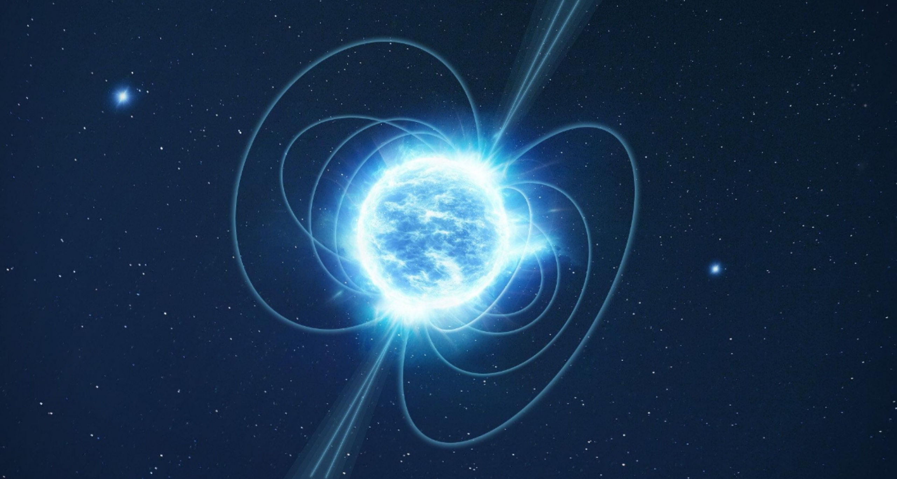
Нейтронная звезда — это космический объект, который образуется после взрыва сверхновой на финальной стадии жизни массивной звезды. Она состоит в основном из нейтронов и отличается чрезвычайной плотностью: при небольших размерах (10–20 км в радиусе) имеет массу, сравнимую с массой Солнца
Нейтронные звёзды возникают в результате гравитационного коллапса ядра массивной звезды (с начальной массой 8–30 масс Солнца), которая исчерпала термоядерное топливо. Когда в ядре заканчивается топливо, давление, которое противостояло гравитации, исчезает, и ядро начинает стремительно сжиматься. При этом температура резко возрастает, электроны и протоны сливаются в нейтроны (с выбросом нейтрино). Процесс продолжается до тех пор, пока ядро практически полностью не станет нейтронным.
Чёрные дыры
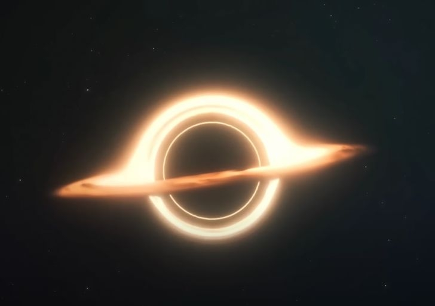
Чёрные дыры — это области пространства с настолько сильной гравитацией, что ничто, включая свет или другие электромагнитные волны, не может из них вырваться. Они возникают, когда массивные звёзды исчерпывают своё топливо и коллапсируют под действием собственной гравитации.
Самый распространённый сценарий связан с коллапсом массивных звёзд. Когда у звезды с массой более 20 солнечных масс заканчивается топливо, она больше не может противостоять собственной гравитации. Начинается стремительное сжатие. Наружные слои звезды выбрасываются во взрыве сверхновой, а ядро сжимается до критического состояния. Если масса ядра превышает три солнечных массы, оно превращается в чёрную дыру.
Переменные звёзды
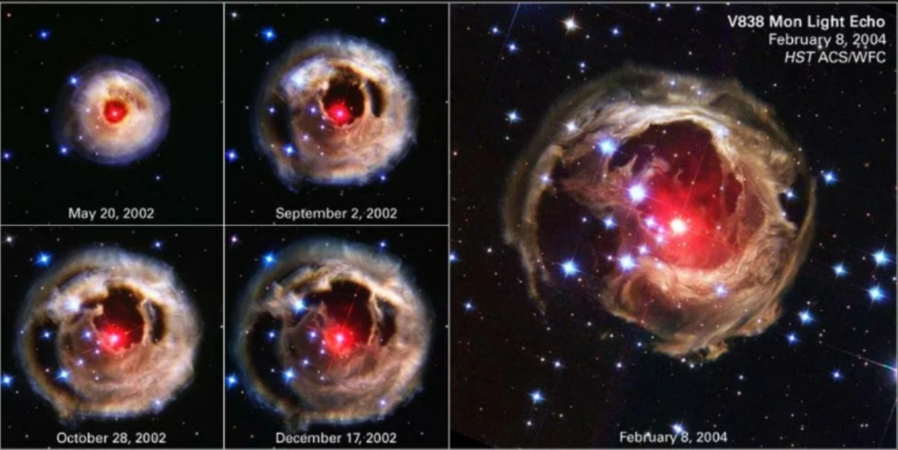
Переменные звёзды — это звёзды, видимый блеск (звёздная величина) которых систематически меняется со временем. Эти изменения не связаны с атмосферными эффектами (мерцанием, прозрачностью воздуха) и обнаруживаются при современном уровне точности астрономических наблюдений.
Переменные звёзды образуются на определённых стадиях эволюции звёзд, когда возникают процессы, меняющие их блеск. Физические переменные звёзды появляются из‑за внутренних процессов: пульсаций (расширения и сжатия внешних слоёв), термоядерных вспышек, взрывов (как у новых и сверхновых звёзд) либо перетекания вещества в тесных двойных системах. Геометрические переменные звёзды формируются в системах, где блеск меняется из‑за внешних эффектов: например, при взаимных затмениях компонентов двойной системы (как у звёзд типа Алголя) или из‑за вращения звезды с неоднородной поверхностью (пятнами и температурными аномалиями).
Внутренний вид звезды
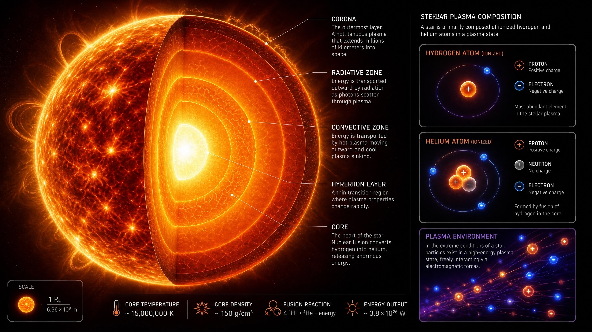
Звезда представляет собой массивный самосветящийся астрофизический объект сферической формы, состоящий из плазмы. В недрах звезды происходят термоядерные реакции — основной источник её энергии. Внутреннее строение звезды зависит от её массы, возраста и стадии эволюции.
Ядро — центральная область звезды, где протекают термоядерные реакции. Здесь достигаются максимальные значения температуры и давления. В звёздах главной последовательности (включая Солнце) в ядре происходит синтез гелия из водорода (протон‑протонный цикл или цикл CNO). У Солнца граница ядра находится на расстоянии 0,3R ⊙ от центра (где R ⊙ — радиус Солнца). В ядрах более массивных звёзд могут протекать реакции синтеза более тяжёлых элементов — вплоть до железа на поздних стадиях эволюции.
Зона лучистого переноса (лучистая зона) — область, в которой энергия передаётся наружу путём последовательного поглощения и переизлучения фотонов. Этот механизм эффективен, когда вещество достаточно прозрачно. У звёзд с массой, близкой к солнечной, лучистая зона располагается непосредственно над ядром. У маломассивных звёзд (<0,5M ⊙ , где M ⊙ — масса Солнца) лучистая зона может отсутствовать, а у массивных звёзд (>1,5M ⊙ ) она находится во внешних слоях.
Конвективная зона — область, где энергия переносится за счёт движения вещества: нагретые потоки плазмы поднимаются к поверхности, остывают и опускаются обратно. Конвекция возникает, когда лучистый перенос становится неэффективным из‑за высокой непрозрачности вещества. В Солнце конвективная зона начинается на расстоянии ∼0,7R ⊙ от центра и простирается до фотосферы. У массивных звёзд конвективная зона окружает ядро, а у маломассивных — может охватывать всю звезду целиком.
Внутреннее строение звезды — сложная саморегулирующаяся система, находящаяся в состоянии гидростатического и теплового равновесия. Баланс между гравитационным сжатием и давлением газа/излучения, а также механизмы переноса энергии определяют эволюцию звезды и её наблюдаемые характеристики. Изучение внутренней структуры звёзд опирается на теоретические модели (уравнения строения звёзд) и данные астросейсмологии, позволяющей «прослушивать» колебания звёздных недр.
Хотите узнать больше? Заполните форму для продолжения